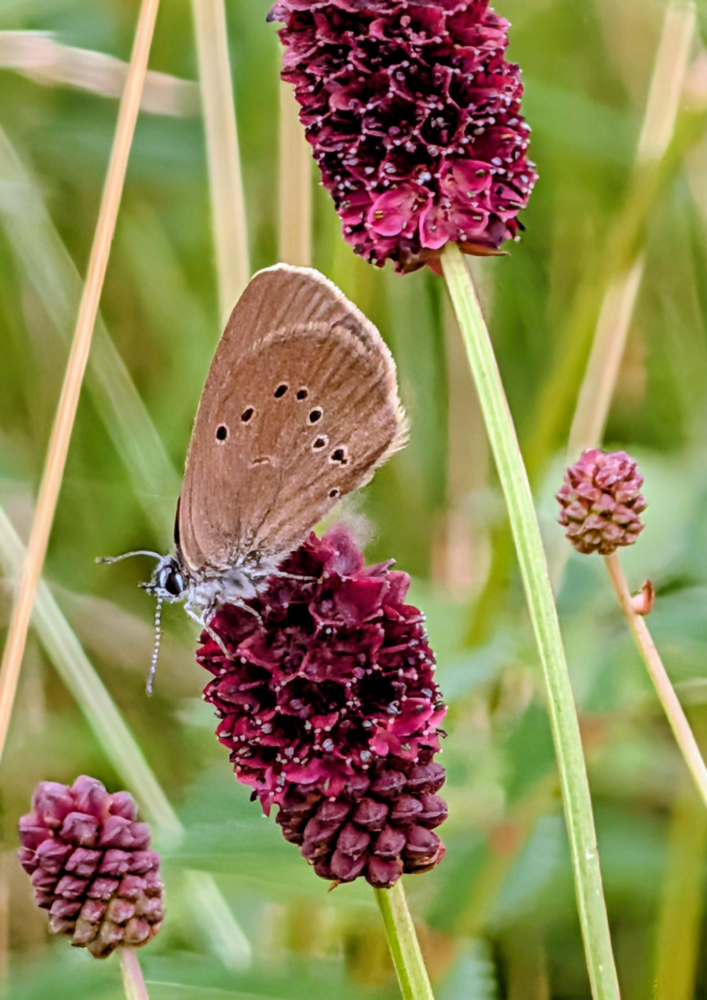

Italienischer Abend 2026
Am Samstag, 1. August 2026, lädt die Dörfergemeinschaft zum Italienischen Abend ein. Weitere Informationen und den Flyer findest du auf unserer Serviceseite.
Informationen und Flyer ansehen →Willkommen am Thürne
Unsere sieben Dörfer liegen zwischen Bad Münstereifel, Rheinbach und dem Ahrtal – umgeben von einer reizvollen Landschaft und verbunden durch eine lebendige Dorfgemeinschaft.
Zur Dörfergemeinschaft gehören Eichen, Houverath, Lanzerath, Limbach, Maulbach, Scheuren und Wald. Hauptort ist Houverath.
Die Region bietet einen attraktiven Lebens- und Naherholungsraum. Moderne Glasfaseranschlüsse ermöglichen zeitgemäße Kommunikations- und Arbeitsmodelle. Beliebte Ausflugsziele sind das City Outlet Bad Münstereifel und das 100-Meter-Radioteleskop Effelsberg.
Unser Verein
Der Verein wurde 2012 aus privater Initiative gegründet. Heute bringen sich Menschen mit unterschiedlichen Interessen, Ideen und Fähigkeiten ein und gestalten das Leben in unseren Dörfern gemeinsam.
Was uns bewegt
Gemeinsam gestalten wir das Leben in unseren Dörfern aktiv und vielfältig.
Aus der Dörfergemeinschaft
Am Samstag, 1. August 2026, lädt die Dörfergemeinschaft zum Italienischen Abend ein. Weitere Informationen und den Flyer findest du auf unserer Serviceseite.
Informationen und Flyer ansehen →Knapp 40 Mitglieder des Kulturkreises Wietzen besuchten Houverath. Gemeinsam wurden regionale Ziele erkundet, Pizza gebacken und Erfahrungen rund um das traditionelle Backhandwerk ausgetauscht.
Bericht und Fotos ansehen →Monatsauswahl
Blinder Passagier · Film: Bernd · Aufnahme September 2026

Mitmachen kann jeder, der sich nach Neigung, Ideen und Kenntnissen einbringen will. Aber allein schon mit Ihrer kostenlosen Mitgliedschaft unterstützen Sie uns. Hier geht’s zum Mitgliedsantrag. Sie können gerne mit unserem Verein Kontakt aufnehmen.